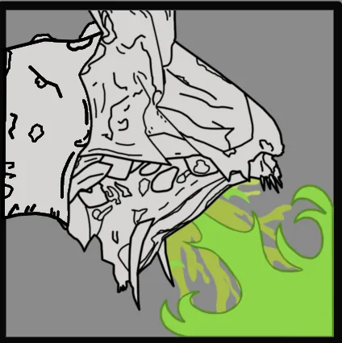

This oversized affront to Free skies everywhere circles its would-be prey, 俯冲中 down intermittently to bespew them with air-combustible 酸. A spineless tactic befitting an exoskeletal monstrosity.
— 绝地潜兵 2 PlayStation Store Page
“
终结族 Dragonroaches menace the skies of this 行星. Prepare to encounter airborne 敌人.
— 星系战争 Table 描述
蟑龙 是 庞大 flying 终结族, described by the 绝地潜兵2 developers as a "big flying 吐酸泰坦".
Dragonroaches can only spawn in solitary patrols that can be spotted from 远距离. They do not have fixed spawns at 目标 locations or POIs, nor can they be spawned through Bug 突破.
吐酸泰坦 and Dragonroach spawns are mutually exclusive (except on the Spore Burst Strain, where Dragonroaches spawn alongside 孢子爆裂吐酸泰坦); in situations where a 吐酸泰坦 would normally spawn, such as 吐酸泰坦 虫穴, distant patrols, and Bug 突破, a 强袭虫 is spawned instead. Notably, this makes it possible to encounter normal Chargers on 超级绝地潜兵难度missions, where their spawns are otherwise replaced entirely by 强袭虫 Behemoths and Spore Chargers.
On 撤离高价值资产 missions on planets where Dragonroaches are active, they can spawn before the pre-任务 timer finishes counting down; therefore it is advised to prepare for its 攻击 immediately.
行为
The Dragonroach eerily soars across the skies of the Hive World when not alerted. Upon spotting a 绝地潜兵 or being shot at, the Dragonroach will begin to perform a strafing run towards its 目标 and will spew its 火焰 breath over a large linear area. After which it will hover low in midair behind its 目标 for a moment, before performing another concentrated 火焰 breath 攻击 and returning to higher altitudes. Once engaged in combat with a 绝地潜兵, the Dragonroach will circle its 目标 at high altitude between 攻击.
Like Bile Titans, Dragonroaches have a heavily 有护甲 甲壳, and their 主体 弱点 is their head.
Disclaimer: 每个带数量的高亮部位 a 数量有各自的 生命值. 未标注数量的部位共享 生命值 pools.
1) 生命值标注为 标注为 "主体" 没有各自的 individual 生命值. All 造成伤害 to these parts is 转移到敌人的 主生命值 pool.
2) 请参阅 护甲 values and enemy 耐久度 as defined in 伤害 for more information.
3) 造成伤害 to a part will also be 部分或全部转移 in full to 主生命值. 若设置为 0%, 否 伤害 is transferred.
4) 若设置为 "是", 伤害 transferred 对主血量 is capped by the combined 生命值 and 构造 of the part.
5) 构造 充当 a secondary 生命池 that, 一旦主体或肢体 生命值 has been depleted, 可能会衰减. The first number is the total 构造 and the second is the 衰退速率. 若设置为 0/s 不会衰减 and the 构造 作为额外 生命值.
6) 爆炸抗性 means 爆炸 伤害抗性, and can 射程 from 0 to 100%. 若设置为 100%, the limb cannot take 爆炸伤害; The 爆炸伤害 will instead 目标 主体. 请参阅 伤害 for more information.
Note: This 机械师, known as Affected By 爆炸 can only occur once per 爆炸, 无论 100% 爆炸抗性 parts hit, and the 爆炸's 护甲穿透 must match or exceed 主体护甲 to deal 伤害 对主血量. However, 如果相同 爆炸 has already damaged 主体, this 机械师 will not trigger.
武器配置
Alchemical Pyrosis

Somehow evolving to spray flammable venom instead of caustic filth. The Dragon Roach's firey breath is capable of spreading far and wide as it hovers, saturating the ground in 化学 flame and immolating anything within it.
While in the open, 绝地潜兵 should be vigilant in scanning the sky to avoid an ambush by a Dragonroach's strafing run. Pinging its position for your team can help prevent unnecessary deaths.
Trying to 攻击 the Dragonroach during its diving breath 攻击 will likely result in death if the 生物 is 索敌 you.
The Dragonroach's 火焰-breathing 攻击 will ignite the player so a 绝地潜兵 should go prone if they are hit or are likely to be hit.
The Dragonroach exclusively 使用次数 火焰伤害 for all it's 攻击. Because of this, using 护甲 with Inflammable, Acclimated，或 Desert Stormer passives can greatly reduce their lethality.
绝地潜兵 may find a use for the SH-20 防弹盾牌 Backpack as it is capable of completely blocking the 火焰 spewed. This is helpful for defending teammates as they line up a 爆头 with 反坦克武器.
The Dragonroach will always repeat the following 攻击 顺序:
It spots valid targets such as 绝地潜兵 and 哨戒炮, making an audible screech.
Proceeding to glide and circle the selected 目标 for a moment. Before the dive, it will make an audible flap noise.
It then proceeds to dive and unleashes a strafing breath 攻击.
After diving to avoid this 攻击, there is ample opportunity to charge up 武器 like the PLAS-45 Epoch 和 LAS-99 类星体加农炮 to line up a shot.
Hovers for its final tracking breath 攻击.
This stationary state is the easiest moment to hit the Dragonroach. While highly risking death.
It is possible to take minimal chip 伤害 by waiting until the last moment to dive out the way and staying prone.
As the breath particles will be focused on your last position, and the 火焰 puddles are not able to set you aflame while prone.
Unlike its grounded cousin, the 吐酸泰坦, Dragonroaches are quite 易受 to being staggered if hit. Sustained 火焰 from any high-硬直 爆炸武器, such as suppressive 火焰 from EXO-49 Emancipator 外骨骼机甲 autocannons, can prevent a Dragonroach from attacking or fleeing, effectively 眩晕锁定中 it in midair.
When hit with sufficient 硬直力度 while breathing 火焰, the 火焰 breath will 继续 as the Dragonroach flails in mid-air and can hit divers who were not originally in the line of 火焰.
It is worth noting the hitbox of the Dragonroach's 火焰 攻击 extends beyond its visual 外观. 绝地潜兵 even outside of the apparent strafe path of the Dragonroach should take evasive action.
将军
The Dragonroach has high 生命值, high mobility, and a wide-area flame 攻击. As such, it should be the highest priority 目标 when on the battlefield.
The Dragonroach boasts an abundance of 重型 护甲 as well as near-universal 50% 爆炸 伤害抗性. It therefore requires specific 战术 to kill efficiently. Here are 几个 recommended methods:
1. Shoot the head with 反坦克武器 for a guaranteed one or two-shot kill.
The head has 重型 护甲 and only 1.5k HP, identical to that of the 吐酸泰坦.
Lighter AT 武器 such as the PLAS-45 Epoch and MLS-4X 突击兵 will two-shot if hitting the head, with the RS-422 磁轨炮 requiring three shots at 85%+ unsafe charge.
2. Shoot the body with 重型 反坦克武器.
The 主生命值 pool of 6.5k HP can be efficiently damaged by hitting the body of the roach, which is largely 受保护 by 重型 护甲。
The 主生命值 pool can be 已降低 to 0 HP after just two hits with the FAF-14 Spear, or to ~100 HP with two hits of the GR-8 无后坐力炮.
Killing with body shots truly requires the heaviest of AT 武器, since lesser 武器 take a prohibitively long time. Even the EAT-17 消耗性反坦克武器 requires four body hits to kill a Dragonroach.
This method can be unreliable if the Dragonroach is positioned with its wings facing the 绝地潜兵, as shots will likely hit the wings, dealing greatly 已降低 伤害.
3. Shoot the body using 爆炸武器 with large radius, high 耐久伤害, and 重型 穿透.
The roach has many body parts that can be damaged with explosives, which will multiply the 伤害 to 主生命值.
The PLAS-45 Epoch is barely capable of the one-shot as well, provided it hits specifically dead-centre of its body 质量.
4. 目标 one of the wings. The wings are completely 无护甲 but have very high 耐久度 and are 致命.
Any weapon can 伤害 the wings due to their lack of 护甲, but due to their high 耐久度 of 100%, 反坦克 or 爆炸 武器库 is recommended, such as a flak mode AC-8 机炮.
小型 arms 火焰 should be directed towards shredded wings, as they are already damaged.
The Dragonroach can also be reliably killed with a 单发 from the 轨道炮攻击.
Using 重型 武器库 with homing projectiles such as the FAF-14 Spear or StA-X3 W.A.S.P. 发射器 can deal significant 伤害 to the Dragonroach without requiring precise aim or timing.
琐事
the Dragonroach used to have a different 星系战争 Table 描述:
“
终结族 Dragonroaches menace the skies of this 行星.
— Original 星系战争 Table 描述
Dragonroach is written as Dragon Roach in the dispatch for Strategic Oppurtunity A3-6-4.